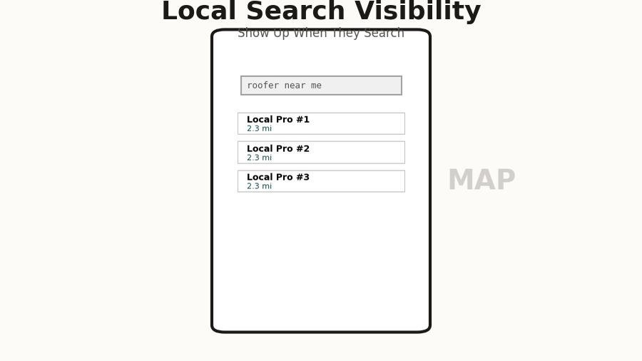
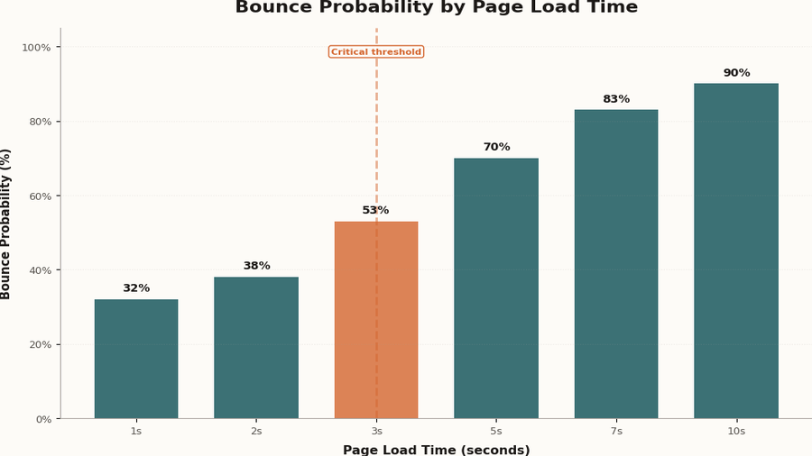
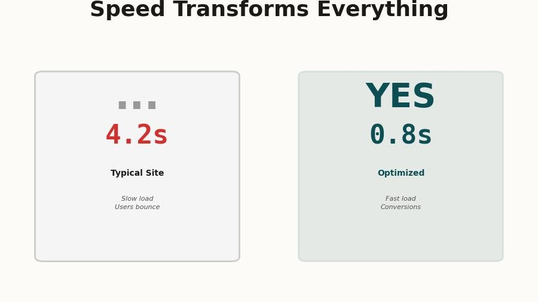
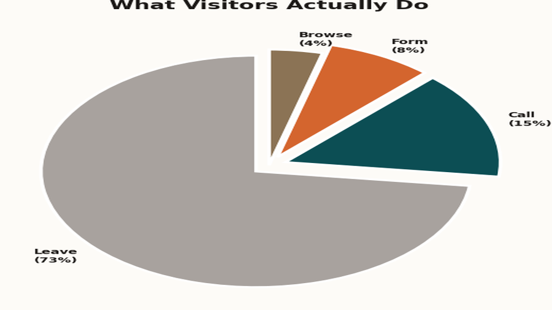
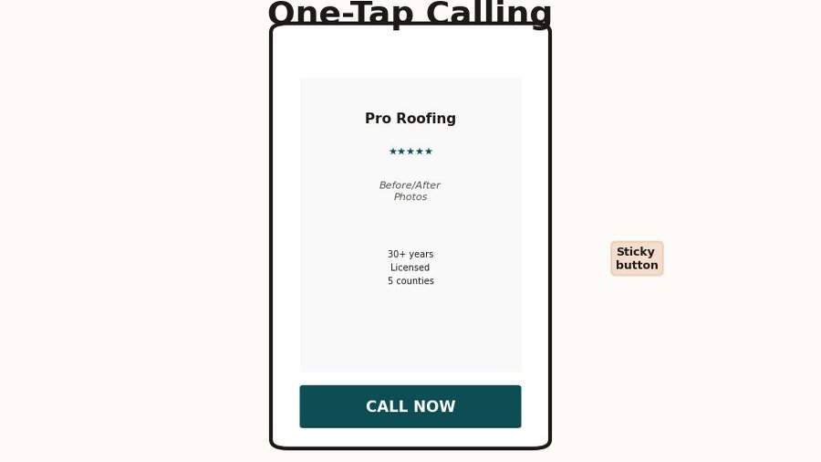
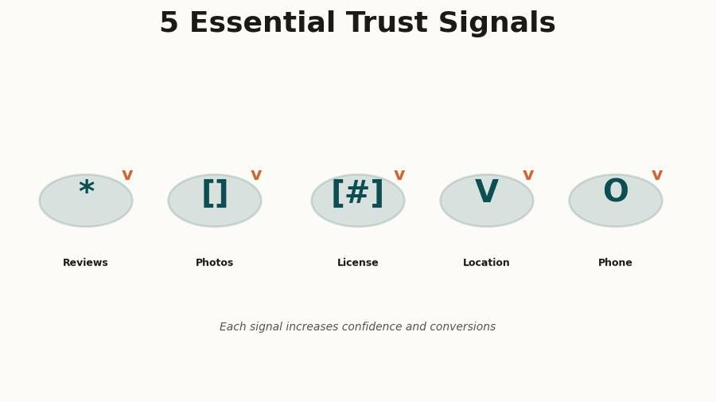

I want to start with something I see constantly, and it's worth being direct about: most contractors who tell me their website "isn't working" have already convinced themselves they know why. They think the photos aren't good enough, or the color scheme looks dated, or they need to add more services to the page. So they either hire someone to redesign the visuals, or they fiddle with the copy themselves for a few hours, and then the phone still doesn't ring and they conclude that websites just don't work for their business.
That conclusion is wrong, and it's expensive. The problem almost never comes down to how a contractor's site looks - it comes down to how the site is built, how fast it loads, and whether it makes it painfully obvious what a visitor should do next. Those three things together are responsible for the overwhelming majority of silent phones, and fixing them requires a different diagnosis than most people are willing to make.
Here's what I want to walk through: the real journey a customer takes from "I need a contractor" to "I'm calling this person," what your site is probably doing wrong at each step of that journey, and the one structural change that matters more than anything else you could do.
How customers actually find you - and what happens in the first three seconds
The mental model most contractors have about how people find them goes something like this: someone is sitting at a desk, they think "I need a roofer," they open a browser, they search, they browse a few sites, they call the one that seems the most established. That model is wrong in almost every detail, and it matters a lot.

According to Google's own data, 76% of people who search for a local service on their phone visit that business within 24 hours, and 28% of those searches result in a purchase. The search is happening on a phone, usually while the person is already dealing with the problem - standing in front of a leaking faucet, looking at a damaged fence from the driveway, or sitting in a hot house waiting for someone to come look at the AC. They are in the middle of something stressful, and they want to make a decision quickly so they can get back to their life.
That context changes everything about what your website needs to do. They are not browsing thoughtfully - they are scanning for two things: does this business look real and competent, and can I contact them right now without digging around? If your site takes more than three seconds to load on a cell connection, most of them never even see it. And if they do see it and the phone number isn't immediately visible, or clicking a link doesn't start a phone call directly, you have already lost most of them.
The decision about whether to call you is usually made within three seconds of your page appearing - before anyone has read a single word you've written.
The "three-second judgment" is real, and it is almost entirely visual and structural - not content-based. Does the site look like it was built in the last five years? Does it load fast enough that the visitor doesn't feel like they're waiting? Is there a phone number at the top? Those snap judgments happen before anyone reads your about page or looks at your service list, and they determine whether the person keeps reading or hits the back button and clicks the next result.
There's also the Google Maps piece, which a lot of contractors overlook entirely. When someone searches "painter near me" or "roofing contractor Melbourne FL," the first thing they see isn't your website - it's the local map pack, a cluster of three businesses with star ratings, review counts, and a distance. If you're not in that map pack, you essentially don't exist for the vast majority of searches, because most people never scroll past it. Getting into that pack requires a well-maintained Google Business Profile with consistent information and real reviews, and it feeds directly off your website's credibility. But that's a separate topic - the point here is that your website is only part of the picture, and it has to work perfectly when someone does click through from either a map listing or a direct search result.
The speed problem nobody talks about
I am going to make a claim that sounds extreme until you see the data: if your website takes more than three seconds to load on a mobile connection, you are losing more than half your visitors before they see anything at all. This is not a hypothesis or a best practice recommendation - it's a consistently measured reality across millions of sites and billions of user sessions.

Google has been measuring this relationship between page speed and bounce rate for years, and the numbers are brutal. At a one-second load time, the probability of a visitor leaving immediately is around 32%. At three seconds, it's 53%. At five seconds, it's 90%. Most contractor websites - especially the ones built on template-heavy platforms, loaded up with large uncompressed images, or running on cheap shared hosting - are sitting somewhere between four and eight seconds on a typical mobile connection. That means the majority of the people who found you, who were interested enough to click, are gone before your site even finishes loading.
The causes are usually the same across the sites I audit: images that weren't compressed before uploading, so a photo gallery is serving 4MB files to a phone that could display a 200KB version just as clearly; JavaScript that runs before the page renders, adding two or three seconds of blank white screen before anything appears; fonts loaded from a third-party server that the browser has to wait for before displaying text; and page builders that generate hundreds of kilobytes of CSS and JavaScript even for simple layouts.

The fix isn't glamorous. It's compressing images, writing lean HTML and CSS instead of using a bloated template, serving files from a fast hosting infrastructure, and making sure the most critical content - the stuff that appears "above the fold" on a phone screen - loads immediately even if the rest of the page is still coming in. A site that loads in under a second on mobile feels completely different from a site that loads in four seconds, and that difference shows up directly in how many people call you.
Go to pagespeed.web.dev and run a test on your homepage with the mobile setting. A score above 90 is excellent. Below 50 means you are actively losing customers. Most contractor sites score between 20 and 45.
What visitors actually do on your site - the data is uncomfortable
Even when a visitor makes it past the load time and stays on the page, what they do next is probably not what you're imagining. Most site owners assume people read the content, browse around, and make a considered decision. That's not what the data shows.

Heatmap and session recording tools - products like Hotjar and Microsoft Clarity, both of which have free tiers - paint a pretty consistent picture when applied to local service business websites. Roughly 73% of visitors leave without taking any action at all. They don't click a link, they don't call, they don't fill out a form - they just leave. Of the 27% who do interact, the vast majority interact with only one or two elements, and those elements are almost always the phone number (if it's clearly visible) or a contact form (if it's on the homepage).
What people don't do, despite contractors spending enormous amounts of energy on these things: they don't read the "About Us" page in any meaningful number, they don't browse through the services list in detail, they don't look at the blog posts, and they don't compare the different packages or tiers. I know that's discouraging if you've spent time writing that content - it's not that the content has no value, but it's not what drives someone to pick up the phone on a first visit.
What they actually want to know, and what they will either figure out immediately or give up on, is this: are you the kind of company I'd trust in my house, and how do I reach you right now? Everything else is secondary. This isn't a cynical take on your customers - it's just an accurate model of how people make decisions under pressure with limited time, which is exactly the situation of someone dealing with a home repair or improvement project.
So if people are spending 90% of their interaction with your site on the phone number and the contact form, the question becomes: how prominent and frictionless are those two things? And this brings us to the one thing that actually matters.
The one thing that actually matters: a clear, obvious call to action on every screen
I promised one recommendation, not five, so here it is: every single screen of your website, on every device, at all times, should show a prominent click-to-call button that is impossible to miss. Not buried in the footer. Not in a menu someone has to open. Not a phone number they have to manually dial. A tap-to-call button that is in the visitor's field of view from the moment the page loads.

On desktop, this means the phone number is in the top right corner of the navigation bar, large enough to read at a glance, ideally formatted as a clickable link so someone using a laptop with a phone number integration can dial it without typing. On mobile, this means a sticky button at the bottom of the screen - the kind that follows the user as they scroll - with a phone icon and your number, large enough to tap with a thumb without zooming in.
The reason this matters more than almost anything else is friction. Every step between "I want to call this contractor" and an actual phone call is a step where you lose a percentage of the people who were ready to hire you. Having to scroll to the bottom to find a number is friction. Having to manually dial a number instead of tapping it is friction. Having a phone number in small gray text that blends into the footer is friction. Each of these things is small in isolation, and nobody would describe any of them as a serious problem - but together they add up to a conversion rate that's a fraction of what it should be.
I've seen this play out clearly on sites I've audited before and after adding a sticky mobile CTA. In one case, a painting contractor in central Florida had a perfectly well-designed site with good photos and solid reviews, but the phone number was only in the footer and in the contact page header. After adding a sticky tap-to-call bar to the mobile layout, their call volume from the website went up 40% in the first month - same traffic, same content, same everything, just a button that was always visible on mobile.
The secondary element, which pairs directly with the call button, is a contact form that's on the homepage itself - not buried on a separate contact page that someone has to navigate to. A lot of people, particularly for larger jobs, want to send a quick message rather than call, and making that a two-step process (find the contact page, then fill out the form) loses a meaningful percentage of those people. A short, simple form right on the homepage - name, phone number, project description, send - covers the people who want asynchronous contact and removes another barrier.
The visitors who are ready to hire you are not going to hunt around your website to figure out how to reach you. They're going to click the first result that makes it easy, and that might not be you.
The trust signals that make people actually pick up the phone
Once someone has landed on your site and can see how to contact you, there's still the question of whether they trust you enough to do it - and this is where a lot of contractor websites fail in a quieter, harder-to-diagnose way. The site technically works, the phone number is there, but something feels off and the visitor isn't sure why, so they go back and try the next result instead.

Trust on a contractor's website comes from a handful of specific things, and most of them have nothing to do with how polished the design looks. The most powerful trust signal, by a considerable margin, is real reviews - not a generic "our customers love us" testimonial section, but actual Google reviews with names, dates, photos, and specific details about the work, pulled directly from your Google Business Profile. People know the difference between curated testimonials and genuine unfiltered reviews, and they weight them accordingly.
After reviews, the things that move the needle are before-and-after photos of actual jobs (not stock photography, not staged shots - real work you've done, ideally with a location or project description so it feels specific), your license and insurance information displayed clearly (this removes one of the biggest fears people have about hiring a contractor they don't know personally), and a physical address or service area that confirms you actually work in their area.
What doesn't move the needle much: a long list of certifications with logos the customer doesn't recognize, a detailed company history, a mission statement, or a list of brand values. These things aren't harmful, but they're not what people are looking at when they're deciding whether to trust you - and spending time on them instead of on real reviews and real project photos is a common misallocation of effort.
The practical implication here is that your website and your Google Business Profile are intertwined in a way that most people don't fully appreciate. Your Google Business Profile is often the first impression - people see your star rating and review count before they ever click to your site - and then your site either reinforces that impression or undermines it. A 4.8-star rating on Google followed by a site with no reviews visible, no photos of actual work, and a generic template layout creates a jarring disconnect that erodes trust even in visitors who were already leaning toward calling you.
What a site that actually works looks like
I want to give you a concrete picture of the kind of site I'm describing, because "fast, clear CTA, trust signals" can sound vague if you haven't seen it executed well. Here's what a contractor website that generates consistent inbound calls looks like in practice.
The homepage loads in under two seconds on a mobile connection, which means the images are compressed, the code is lean, and the hosting is fast. The very first thing visible on a phone screen - the area above the scroll line - contains: your company name and logo, a one-line description of what you do and where ("Residential roofing in Brevard County"), a prominent tap-to-call button, and at least one trust indicator like a star rating or a "licensed and insured" badge. Nothing else needs to be there, and adding more things to that area usually makes all of them less noticeable.
As the user scrolls, they see real photos of completed jobs - the kind where you can see the quality of the work - alongside a few representative reviews with actual customer names and dates. There's a short, plain-language description of the services you offer, written the way a customer would describe them rather than the way a contractor would categorize them internally. There's a contact form that takes 30 seconds to fill out. And then there's a footer with your contact information, service area, and license number.
That's it. There is no separate "portfolio page" that nobody visits. There is no blog full of posts that get no traffic. There is no elaborate dropdown menu with eight categories of services. The site's entire job is to answer "can I trust this person, and how do I reach them?" as quickly and convincingly as possible, and everything on it is in service of that goal. It's a site designed around the actual psychology and behavior of someone who's trying to make a fast decision under mild stress, rather than around what the business owner thinks they should know about the company.
Pull up your own site on your phone - not on wifi, switch to your cellular connection. Can you see a phone number without scrolling? Can you tap it and have it immediately start a call? If either answer is no, you have found a significant part of your problem.
The one thing to do right now
Here's where I promised one recommendation, and I'm going to deliver on that. If you do nothing else, make your phone number a prominently visible, tappable link on every screen of your mobile site - ideally as a sticky bar at the bottom of the viewport that's always in view.
I didn't say redesign your site, or fix your speed, or get more reviews, or redo your photos - even though all of those things matter and will make a meaningful difference if you address them. The reason I'm landing on the CTA is because it's the highest-impact change you can make with the least amount of work and risk, it doesn't require rebuilding anything from scratch, and it directly addresses the gap between people who are interested and people who actually call. You can make this change on almost any website platform in an afternoon, and the impact shows up within days of making it.
Speed comes second, because every second you shave off your load time is another chunk of the 53% who are currently leaving before they see anything - and recovering even half of those visitors, without any other changes, would be a dramatic improvement in the number of calls you get. If your site scores below 60 on PageSpeed Insights for mobile, that's the second thing to fix.
Trust signals come third, and the most practical thing you can do there is to embed your Google reviews directly on your homepage using a widget from a service like Elfsight or Widgetic, which pulls your actual Google reviews and displays them with the Google branding that signals authenticity to visitors. This is more credible than writing out testimonials yourself, it takes less time than writing out testimonials yourself, and it updates automatically as new reviews come in.
The underlying pattern I want you to take from all of this is that a website that generates calls is not primarily a design problem - it's a structure and friction problem. Your visitors are on their phones, they're in a mild hurry, they've already made a tentative judgment about whether you seem like a real and competent business, and now they're looking for a reason to call you or a reason not to bother. Make calling you so easy and obvious that they don't have a reason not to, give them the trust signals that confirm their instinct that you're worth calling, and make sure the site loads fast enough that they don't give up before they get there. That's the whole job.